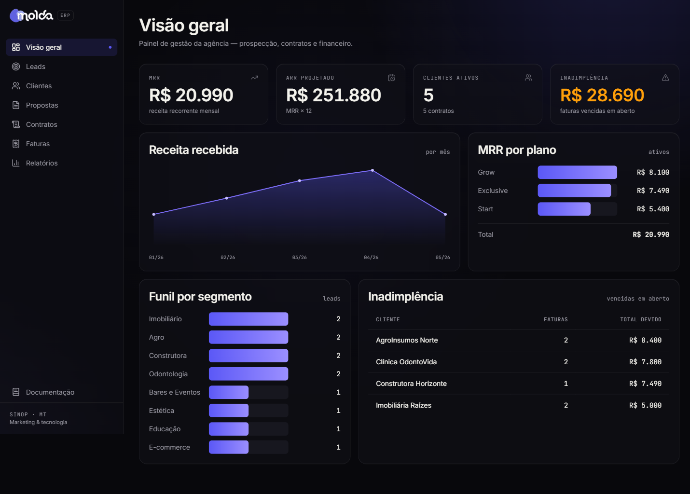
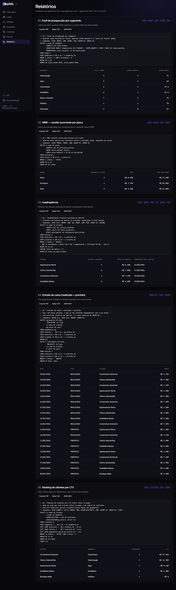
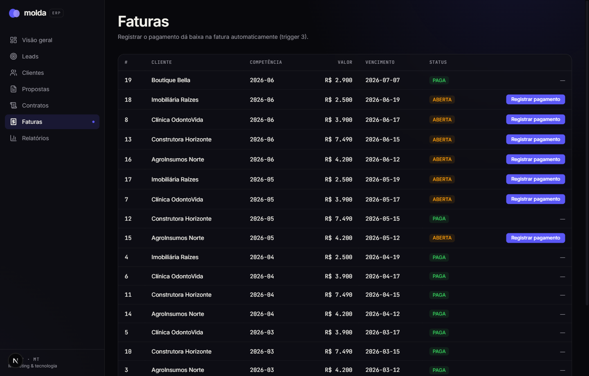

ERP Molda — Documentação do Banco de Dados
Centro Universitário UNIFASIPE — Análise e Desenvolvimento de Sistemas (3º semestre) Disciplina: Banco de Dados — Atividade Avaliativa N3 Aluno: Walisson Vinicius Professor: Willian Sinop/MT — 2026
Sumário
- Apresentação do ERP
- Objetivo e temática
- Arquitetura e tecnologias
- Padrões de nomenclatura
- Modelo de dados (diagrama de entidade-relacionamento)
- Dicionário de dados (explicação de cada tabela)
- Tratamentos de campos
- Triggers (automação das regras de negócio)
- Relatórios SQL de gerenciamento
- Como reproduzir o banco
- Telas do sistema
- Entrega
1. Apresentação do ERP
A Molda é uma agência digital de Sinop/MT que une marketing e tecnologia: cria sites, aplicativos, sistemas e automações sob medida, e opera com planos mensais recorrentes (Start, Grow, Exclusive e Enterprise).
Este ERP foi projetado para controlar a operação real da agência, do primeiro contato com um possível cliente até o recebimento das mensalidades. Ele cobre quatro frentes:
- Prospecção (CRM): captação e qualificação de leads, com auditoria do site de cada lead.
- Comercial: propostas e contratos de assinatura.
- Financeiro recorrente: faturas mensais, pagamentos e inadimplência.
- Operação: projetos entregues e suas tarefas.
2. Objetivo e temática
O objetivo do banco é ser a fonte única de verdade da gestão da agência, respondendo perguntas como: Qual a receita recorrente mensal (MRR)? Quais clientes estão inadimplentes? De onde vêm os melhores leads? Quais clientes geram mais valor (LTV)?
A temática — agência digital com receita recorrente — foi escolhida por ser um cenário rico em relacionamentos (um cliente tem várias propostas; uma proposta vira um contrato; um contrato gera várias faturas; cada fatura recebe pagamentos), o que permite explorar a fundo relacionamentos, tratamentos de campos, triggers e relatórios.
3. Arquitetura e tecnologias
| Camada | Tecnologia |
|---|---|
| Banco de dados | SQLite |
| Aplicação | Next.js 16 (App Router) + TypeScript |
| Acesso a dados | @libsql/client executando SQL puro |
| Interface | Tailwind CSS v4, identidade visual da Molda |
| Hospedagem | Vercel — o arquivo do banco SQLite acompanha a aplicação |
O banco é definido em SQL puro no arquivo db/schema.sql, com dados de exemplo em db/seed.sql. Os cinco relatórios ficam em db/reports/ como arquivos .sql independentes, executados pela aplicação e exibidos ao usuário final. Como o SQLite é um único arquivo, ele é distribuído junto do projeto — sem servidor de banco separado.
4. Padrões de nomenclatura
Para manter o banco organizado e legível, foram adotados os seguintes padrões:
- Tabelas: nome no plural, em
snake_casee em português (ex.:clientes,planos_servicos). - Chave primária: sempre a coluna
id(INTEGER PRIMARY KEY AUTOINCREMENT). - Chave estrangeira:
<entidade no singular>_id(ex.:cliente_id,plano_id). - Datas de controle:
criado_eme, quando aplicável,atualizado_em. - Situações/estados: coluna
statuscom valores em maiúsculas, restritos porCHECK. - Valores monetários: tipo
REAL, em reais.
5. Modelo de dados (DER)
O banco possui 14 tabelas organizadas em quatro módulos. O diagrama abaixo mostra as entidades e seus relacionamentos.
Cardinalidades principais:
- Um segmento classifica vários leads e vários clientes.
- Um lead tem no máximo uma auditoria de site (1:1) e pode se converter em um cliente.
- Um cliente tem várias propostas, vários contratos e vários projetos.
- Um plano participa de várias propostas/contratos e agrega vários serviços (N:N via
planos_servicos). - Uma proposta gera no máximo um contrato (1:1 opcional).
- Um contrato emite várias faturas; cada fatura recebe vários pagamentos.
- Um projeto contém várias tarefas.
6. Dicionário de dados
Módulo CRM / Prospecção
segmentos — nichos de mercado atendidos (Odontologia, Construtora, Agro, etc.).
| Coluna | Tipo | Restrições |
|---|---|---|
| id | INTEGER | PK, AUTOINCREMENT |
| nome | TEXT | NOT NULL, UNIQUE |
| descricao | TEXT | — |
| ativo | INTEGER | NOT NULL, DEFAULT 1, CHECK (0 ou 1) |
| criado_em | TEXT | NOT NULL, DEFAULT data/hora atual |
colaboradores — equipe da agência (sócios e vendedores) que cuida de leads e propostas.
| Coluna | Tipo | Restrições |
|---|---|---|
| id | INTEGER | PK |
| nome | TEXT | NOT NULL |
| TEXT | UNIQUE | |
| papel | TEXT | CHECK (SOCIO, DEV, MARKETING, COMERCIAL) |
| ativo | INTEGER | DEFAULT 1, CHECK (0 ou 1) |
leads — empresas prospectadas, com pontuação de oportunidade (score_feiura: quanto pior o site atual, mais quente o lead).
| Coluna | Tipo | Restrições |
|---|---|---|
| id | INTEGER | PK |
| nome | TEXT | NOT NULL |
| segmento_id | INTEGER | FK → segmentos, NOT NULL |
| responsavel_id | INTEGER | FK → colaboradores (ON DELETE SET NULL) |
| score_feiura | INTEGER | CHECK (0 a 100) |
| temperatura | TEXT | CHECK (FRIO, MORNO, QUENTE, SUPER_QUENTE) |
| tier | INTEGER | CHECK (1 a 3) |
| franquia | INTEGER | CHECK (0 ou 1) |
| status | TEXT | CHECK (NOVO, EM_CONTATO, CONVERTIDO, PERDIDO) |
| convertido_em | TEXT | preenchido por trigger na conversão |
auditorias_site — diagnóstico técnico do site do lead. Relação 1:1 com leads (coluna lead_id é UNIQUE).
| Coluna | Tipo | Restrições |
|---|---|---|
| id | INTEGER | PK |
| lead_id | INTEGER | FK → leads, NOT NULL, UNIQUE |
| https / mobile_ok / tem_whatsapp | INTEGER | CHECK (0 ou 1) |
| tempo_carga_ms | INTEGER | CHECK (≥ 0) |
clientes — leads convertidos (ou entradas diretas) que passam a ser atendidos.
| Coluna | Tipo | Restrições |
|---|---|---|
| id | INTEGER | PK |
| nome | TEXT | NOT NULL |
| segmento_id | INTEGER | FK → segmentos, NOT NULL |
| lead_origem_id | INTEGER | FK → leads (ON DELETE SET NULL) |
| cnpj / email | TEXT | UNIQUE |
| uf | TEXT | CHECK (2 caracteres) |
| status | TEXT | CHECK (PROSPECCAO, ATIVO, INATIVO) |
Módulo Catálogo
planos — planos mensais recorrentes (Start, Grow, Exclusive, Enterprise).
| Coluna | Tipo | Restrições |
|---|---|---|
| id | INTEGER | PK |
| nome | TEXT | NOT NULL, UNIQUE |
| preco_mensal | REAL | NOT NULL, CHECK (≥ 0) |
| verba_minima_midia | REAL | DEFAULT 0, CHECK (≥ 0) |
servicos — itens que compõem os planos (site, artes, vídeos, tráfego, IA, etc.).
planos_servicos — tabela associativa N:N entre planos e serviços, com a quantidade incluída em cada plano. A chave primária é composta por (plano_id, servico_id).
Módulo Comercial / Financeiro
propostas — propostas comerciais enviadas aos clientes.
| Coluna | Tipo | Restrições |
|---|---|---|
| id | INTEGER | PK |
| cliente_id | INTEGER | FK → clientes, NOT NULL |
| plano_id | INTEGER | FK → planos, NOT NULL |
| autor_id | INTEGER | FK → colaboradores |
| valor | REAL | NOT NULL, CHECK (≥ 0) |
| status | TEXT | CHECK (RASCUNHO, ENVIADA, ACEITA, RECUSADA) |
contratos — assinaturas recorrentes. A coluna valor_anual é gerada automaticamente.
| Coluna | Tipo | Restrições |
|---|---|---|
| id | INTEGER | PK |
| proposta_id | INTEGER | FK → propostas, UNIQUE |
| cliente_id | INTEGER | FK → clientes, NOT NULL |
| plano_id | INTEGER | FK → planos, NOT NULL |
| valor_mensal | REAL | NOT NULL, CHECK (≥ 0) |
| valor_anual | REAL | GERADA: valor_mensal × 12 (STORED) |
| data_assinatura | TEXT | DEFAULT data atual |
| status | TEXT | CHECK (ATIVO, PAUSADO, CANCELADO) |
faturas — mensalidades emitidas por contrato. Há uma fatura por competência (UNIQUE em contrato + competência).
| Coluna | Tipo | Restrições |
|---|---|---|
| id | INTEGER | PK |
| contrato_id | INTEGER | FK → contratos, NOT NULL |
| competencia | TEXT | NOT NULL (formato AAAA-MM) |
| valor | REAL | NOT NULL, CHECK (≥ 0) |
| vencimento | TEXT | NOT NULL |
| status | TEXT | CHECK (ABERTA, PAGA, ATRASADA, CANCELADA) |
pagamentos — pagamentos recebidos por fatura (admite pagamento parcial).
| Coluna | Tipo | Restrições |
|---|---|---|
| id | INTEGER | PK |
| fatura_id | INTEGER | FK → faturas, NOT NULL |
| valor | REAL | NOT NULL, CHECK (> 0) |
| metodo | TEXT | CHECK (PIX, CARTAO, BOLETO, DINHEIRO) |
Módulo Operação
projetos — entregas executadas para o cliente (site, landing, app, sistema, automação, marketing).
tarefas — tarefas que compõem cada projeto, com responsável e horas trabalhadas.
7. Tratamentos de campos
O banco aplica diversos tratamentos para garantir integridade e qualidade dos dados:
- Integridade referencial:
PRAGMA foreign_keys = ONe chaves estrangeiras com a ação adequada —RESTRICTno catálogo (não deixa apagar um plano em uso),CASCADEem dependentes (apagar um projeto apaga suas tarefas) eSET NULLem vínculos opcionais (a origem de um cliente). - Obrigatoriedade e unicidade:
NOT NULLnos campos essenciais eUNIQUEem e-mails, CNPJ, nome de plano/segmento e na relação 1:1 de auditoria. - Domínios controlados (
CHECK): todos os campos destatusaceitam apenas valores válidos; faixas numéricas são validadas (score_feiuraentre 0 e 100,tierentre 1 e 3, valores monetários ≥ 0;ufcom 2 caracteres). - Valores padrão (
DEFAULT):criado_emrecebe a data/hora atual; campos booleanos assumem 0/1;statusrecebe o estado inicial. - Coluna gerada:
contratos.valor_anualé calculada pelo próprio banco comovalor_mensal * 12(GENERATED ALWAYS AS ... STORED), evitando redundância e inconsistência. - Índices: criados nas chaves estrangeiras e nas colunas mais filtradas pelos relatórios (
faturas.status,faturas.competencia,leads.temperatura), melhorando o desempenho das consultas.
8. Triggers
Sete triggers automatizam as regras de negócio:
trg_proposta_aceita_gera_contrato— quando uma proposta muda paraACEITA, cria automaticamente o contrato correspondente.trg_contrato_novo_gera_fatura— ao inserir um contrato ativo, gera a primeira fatura (na competência da assinatura, com vencimento em 7 dias).trg_pagamento_quita_fatura— ao registrar um pagamento, soma (SUM) todos os pagamentos da fatura e, se atingirem o valor, marca a fatura comoPAGA.trg_contrato_cancelado_cancela_faturas— ao cancelar um contrato, cancela as faturas que ainda estavam em aberto.trg_lead_convertido— quando um lead muda paraCONVERTIDO, carimba a data/hora da conversão.trg_proposta_valida_piso— impede (RAISE(ABORT)) o cadastro de uma proposta com valor abaixo do preço mínimo do plano.trg_contratos_touch— mantém o campoatualizado_emdo contrato sempre que ele é alterado.
Os triggers 1 e 2 formam uma cadeia: aceitar uma proposta cria o contrato, que por sua vez gera a primeira fatura — tudo em uma única ação do usuário.
9. Relatórios SQL de gerenciamento
São cinco relatórios, cada um voltado a uma decisão de gestão. Juntos, eles aplicam todos os comandos exigidos: WHERE, AND, OR, JOIN, UNION ALL, COUNT, SUM (além dos TRIGGERS da seção 8). A seguir, cada relatório com sua explicação e o SQL completo.
Relatório 1 — Funil de prospecção por segmento
Comandos: JOIN, WHERE, AND, COUNT, AVG. Mostra, por nicho, quantos leads existem, quantos estão quentes e o score médio de oportunidade — ajuda a decidir onde concentrar a prospecção. (db/reports/01_funil_prospeccao.sql)
SELECT s.nome AS segmento,
COUNT(*) AS total_leads,
COUNT(CASE WHEN l.temperatura IN ('QUENTE', 'SUPER_QUENTE') THEN 1 END) AS leads_quentes,
ROUND(AVG(l.score_feiura), 1) AS score_medio
FROM leads l
JOIN segmentos s ON s.id = l.segmento_id
WHERE l.ativo = 1 AND l.franquia = 0
GROUP BY s.id
ORDER BY total_leads DESC, score_medio DESC;
Relatório 2 — MRR (receita recorrente mensal) por plano
Comandos: JOIN, WHERE, SUM, COUNT. Soma o valor mensal dos contratos ativos por plano e projeta a receita anual (ARR) — principal indicador de saúde do negócio. (db/reports/02_mrr_por_plano.sql)
SELECT p.nome AS plano,
COUNT(c.id) AS contratos_ativos,
SUM(c.valor_mensal) AS mrr,
SUM(c.valor_mensal) * 12 AS arr_projetado
FROM contratos c
JOIN planos p ON p.id = c.plano_id
WHERE c.status = 'ATIVO'
GROUP BY p.id
ORDER BY mrr DESC;
Relatório 3 — Inadimplência
Comandos: JOIN, WHERE, AND, OR, COUNT, SUM. Lista os clientes com faturas vencidas em aberto, com a quantidade, o total devido e o vencimento mais antigo — aciona a régua de cobrança. (db/reports/03_inadimplencia.sql)
SELECT cl.nome AS cliente,
COUNT(f.id) AS faturas_vencidas,
SUM(f.valor) AS total_em_aberto,
MIN(f.vencimento) AS vencimento_mais_antigo
FROM faturas f
JOIN contratos c ON c.id = f.contrato_id
JOIN clientes cl ON cl.id = c.cliente_id
WHERE f.status = 'ABERTA'
AND (f.vencimento < date('now') OR f.competencia < strftime('%Y-%m', 'now'))
GROUP BY cl.id
HAVING total_em_aberto > 0
ORDER BY total_em_aberto DESC;
Relatório 4 — Extrato de caixa (realizado + previsto)
Comandos: UNION ALL, JOIN, WHERE. Une, em um único extrato ordenado por data, o que já foi recebido (pagamentos) com o que ainda está previsto (faturas em aberto) — caso clássico de UNION ALL, combinando duas origens de mesma estrutura. (db/reports/04_extrato_caixa.sql)
SELECT pg.pago_em AS data, 'REALIZADO' AS tipo, cl.nome AS cliente, pg.valor AS valor
FROM pagamentos pg
JOIN faturas f ON f.id = pg.fatura_id
JOIN contratos c ON c.id = f.contrato_id
JOIN clientes cl ON cl.id = c.cliente_id
UNION ALL
SELECT f.vencimento AS data, 'PREVISTO' AS tipo, cl.nome AS cliente, f.valor AS valor
FROM faturas f
JOIN contratos c ON c.id = f.contrato_id
JOIN clientes cl ON cl.id = c.cliente_id
WHERE f.status = 'ABERTA'
ORDER BY data, tipo;
Relatório 5 — Ranking de clientes por LTV
Comandos: JOIN (INNER + LEFT), WHERE, AND, COUNT, SUM. Soma tudo o que cada cliente ativo já pagou (seu lifetime value) e mostra o número de contratos. O LEFT JOIN garante que clientes ainda sem pagamento também apareçam. (db/reports/05_ltv_clientes.sql)
SELECT cl.nome AS cliente,
s.nome AS segmento,
COUNT(DISTINCT c.id) AS contratos,
COALESCE(SUM(pg.valor), 0) AS ltv
FROM clientes cl
JOIN segmentos s ON s.id = cl.segmento_id
LEFT JOIN contratos c ON c.cliente_id = cl.id
LEFT JOIN faturas f ON f.contrato_id = c.id
LEFT JOIN pagamentos pg ON pg.fatura_id = f.id
WHERE cl.status = 'ATIVO' AND s.ativo = 1
GROUP BY cl.id
ORDER BY ltv DESC
LIMIT 10;
O SQL de cada relatório também é exibido na tela Relatórios do sistema, junto do resultado executado ao vivo no banco.
10. Como reproduzir o banco
- Criar o banco a partir do esquema: executar
db/schema.sqlem um banco SQLite (cria tabelas, índices e triggers). - Popular com dados de exemplo: executar
db/seed.sql. - Rodar qualquer um dos relatórios em
db/reports/.
No projeto, o comando npm run db:build automatiza os passos 1 e 2, gerando o arquivo db/molda.db.
11. Telas do sistema
Figura 1 — Visão geral (dashboard): KPIs de MRR, ARR, clientes ativos e inadimplência, com gráficos de receita por mês, MRR por plano e funil por segmento.

Figura 2 — Relatórios: os cinco relatórios com o SQL e o resultado executado ao vivo no banco.

Figura 3 — Faturas: ao registrar o pagamento, a fatura é quitada automaticamente pela trigger.

12. Entrega
- Repositório (GitHub): https://github.com/WalissonVinicius/molda-erp
- Aplicação (Vercel): https://erp.walisson.dev
- Composição da nota: Banco de Dados (6,0) + Documentação (4,0).